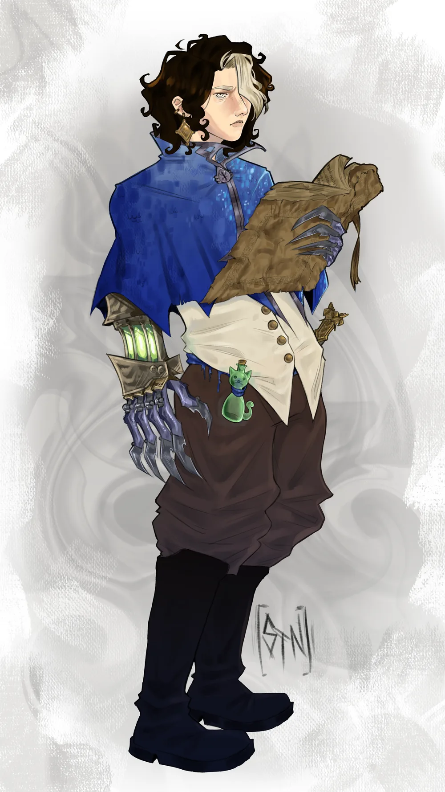

Mercado negro
Contato com NPCs do mercado negro
Kairon vende informação e compra material de laboratório e itens mágicos. Por isso conhece gente do submundo.

25 anos, humano. Nos Aliados, é conhecido como Marck.
Começou com dez pontos distribuídos. Cada tubo vai de 0 a 10. Os críticos nos testes de um atributo fazem ele subir 1 ponto, e quanto mais alto ele está, mais críticos pedem. A contagem fica embaixo de cada tubo.
Só pra compor o personagem, sem peso na ficha: um livro grande e gasto, um frasco em forma de gato com água, um cabo dourado ornamentado preso à cintura e um brinco dourado.
É cientista do exército dos Aliados, na base central. Sintetiza toxinas e inventa de tudo que a ciência permitir, usando o que for preciso pra conseguir conhecimento.
Fora do laboratório, escreve crônicas da vida urbana e conta histórias de todo tipo. Pra ele, todo mundo deve saber de tudo.
O efeito do veneno, o que alimenta os tubos e o que ainda falha no protótipo ficam pra definir com o mestre.
Só o mestre lê esta aba. Aqui está o que os outros jogadores não podem saber.
Kairon é um agente duplo. A Hydra mandou ele pros Aliados como espião, mas ele não é leal a nenhum dos dois lados. É leal ao lucro e ao conhecimento.
Tudo que ele descobre na base central passa por um filtro. A Hydra recebe só o que ele escolhe mandar, e o resto ele vende no mercado negro. Ninguém além dele sabe disso.
Em construção. Marcos vai escrever como funciona o submundo que Kairon conhece.
Conhecimento acima de tudo, bom ou ruim, verdadeiro ou falso. Um livro bem escrito vale mais pra ele do que centenas de moedas de ouro.
Procura uma espécie de Torre de Babel. Pra ele é só uma lenda que pode existir, e a família guarda um único relato dela. É por isso que ele a busca.
Quer poder pra controlar as massas e chegar ao topo, usando os países como peões na guerra. Pra isso usa pessoas, sangue e o que mais for preciso. Regra do mestre: nada sai do planeta.
Pontas soltas de propósito, pro mestre puxar do jeito que quiser.
Aqui ficam só os tipos de gente que ele conhece. Quem são, e quantos, fica por conta do mestre.
Contato com NPCs do mercado negro
Kairon vende informação e compra material de laboratório e itens mágicos. Por isso conhece gente do submundo.
Contato com outros tipos de personagens ou NPCs
Ele também cruza com outros tipos de personagens e NPCs, dentro e fora dos dois lados da guerra. Quem são e como se conheceram se resolve em RP.
Kairon tem contato com estas organizações. Quem são as pessoas dentro delas fica em aberto.
Marck e Kairon são o mesmo personagem. Marck é o nome falso que Kairon usa entre os Aliados.
A versão que os outros conhecem.
A verdade. Só o mestre lê.
Livro-caixa dos dólares do mercado negro. Os lançamentos ficam salvos só neste aparelho. Quem abrir a ficha em outro lugar vê o saldo inicial.
Saldo375dólares
Digite quanto ele tem agora. A bolsa lança a diferença no livro-caixa.
Nenhum lançamento ainda.
Experimento do Kairon, em andamento
Os outros viam um remédio. Kairon viu uma ferramenta.
A droga da doutora estava na enfermaria da base, e ele passava por lá mais do que precisava. Não era pelos doentes. Era pra ouvir. Quando o remédio entrava, as células do paciente recebiam a ordem de se refazer numa velocidade que nenhum corpo foi feito pra suportar, e o homem na maca gritava como se o costurassem por dentro com agulha em brasa. As enfermeiras desviavam o olhar. Kairon abria o caderno e anotava o tempo entre um grito e outro.
Todos ali queriam que a dor parasse. Ele queria saber por que ela existia. E quanto mais perguntava, mais uma ideia se fechava na cabeça dele, limpa e fria: a fórmula não curava ninguém. Ela só empurrava a vida da célula pra frente, mais rápido do que a célula aguentava. A cura era um efeito colateral de uma força que ele podia apontar pro outro lado.
O arsênio já fazia metade do trabalho. Ele não rasga nem queima por fora. Entra quieto e apaga a energia da célula por dentro. Agora imagine essa célula, sem fôlego, recebendo a ordem de se reconstruir sem parar. Kairon imaginou, e riu sozinho na bancada, às três da manhã, com a mão tremendo de empolgação. Não lembrava da última vez que tinha comido.
Ele sabia o que aquilo era. Conhecimento era a única coisa que ele não conseguia largar. Projeto, projeto, projeto. Cada resposta abria duas perguntas, e ele precisava da próxima como outros homens precisam da próxima dose. Se alguém dissesse que ele estava viciado, concordaria sem vergonha nenhuma.
O resultado, no papel dele, é uma morte que começa pequena. A pele em volta do corte fica cinza e cede. O corpo enfraquece, o osso perde a firmeza, e por fim a medula, onde o sangue nasce, para de responder. Cada célula que cai solta o próprio veneno sobre as vizinhas. Não precisa de segunda dose. A ruína anda sozinha.
Ele tentou levar aquilo pro ar, um gás pras trincheiras. No ar, o composto se desmanchava antes de chegar a alguém, e Kairon passou duas noites sem falar com ninguém, furioso com um problema que se recusava a obedecer. Foi quando olhou pras garras das manoplas e entendeu que a resposta sempre esteve ali: levar o veneno direto à carne, sem dar tempo dele se perder.
Alguém poderia perguntar quantos teriam que cair até ele aprender o que queria. Kairon nunca fez essa conta. Não por descuido. O número simplesmente não mudava a resposta.
Restam três coisas que ele ainda anota: o arsênio corrói os tubos, então o composto não pode esperar guardado por muito tempo; o efeito completo leva dias; e a velocidade que ele quer só vem com um catalisador arcano que ele ainda não domina. Antídoto não existe, e não é a prioridade dele.
Na última página do caderno, com a letra apertada de quem não dorme, tem uma única frase sublinhada duas vezes: falta pouco.
Efeitos e tempos pendentes de aprovação do mestre